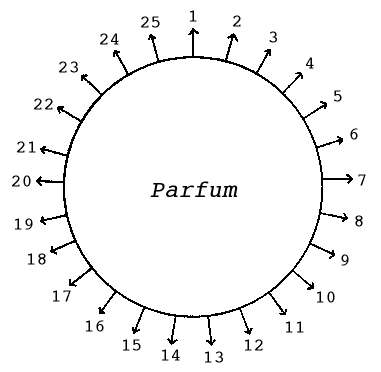

ライオン歯磨本舗・広告部 悪の華
一
季節は移つてきて、香水の欲しい
けれど、香水の複雑した表情に就いては、割合に無関心であるらしい。香水の表情とは、香水の良否の見分け方以外のことです。香気のもつれに出る細かい幻想の糸の織り成す感情の展開のことです。例へば、五月の表情を持つ香水もあり、六月の表情を持つものもあり、又は月光の表情を持つものもあり、霧の明方の表情を持つのもある。または、十七歳の少女の表情、廿歳の青年の表情、街の妖婦の表情、微風の表情、求愛の表情、青き夢の表情、水の流れの表情、森林の真昼の表情、処女の肌の表情、蛇の眼の表情、海のさざなみの表情、輝く指の表情、風にゆらぐ牡丹の表情、草間にかくれる苔花の表情、アメチストの表情、ゴールドン・サフアイヤの表情、ヂルコンの表情等数へきれないほどである。
例へば、坊間行はれてゐるロジアアの赤箱などは、さしづめ、散りかかつた
香水も、英国製、米国製などは、何といつても、フランス製品には及ばない。何故及ばないかといふに、この表情美の線が甚だ以て
フランス製品は、あるか無しかの、おぼろげなさを特長としてゐる。それほど迄に、リフアインされてゐるのだ。その表情の線を掴まうとしても、掴めないほどの柔かさを具へてゐるのだ。さはらうとすれば、逃げてゆくやうに思はれる頼りなさのところに評価しても評価しきれない貴重さが存する。
コテイーの香水のロリガン・エメロード
アリスの「
同じホワイト・ローズでも、コテイーのと、ウビガンのとでは、その表情が非常に異つてゐる。「森林の
一体、表情といふのは、その香気が、あまい、かたい、やわらかい、にがい、くせがある。素直だ、強い、弱い、ふるい、新しい、あらい、こまかい、永く保つ、保たない、遠くへきく、遠くへきかない等といふ現実なものの見分け方の上に、更に、さういふ種々なものが綜合されて、ほのかに煙つてくる夢幻的感情の見分け方なのである。
だから、吾々は素人として「香水の表情」を見分けるには、闇のなかがよい、騒音の絶対に聞えない所がよい、朝がよい、初夏がよい、一人で居るのがよい、無言がよい、一時に一つの香水を試みるのがよい、食後相当時間を経てからがよい、直接よりも
かうして、その香水の純粋表情を見分けてから、第二段として之れを街頭に置いたものとして、悉く以上のものと反対の状態の下に於て、如何に、その表情が外的条件のもとに、ゆがめられてゐるかを試みるのである。
この二つの見分の方法が終つて、初めて、夜の香水、昼の香水、朝の香水、旅出の香水、ランデブウの香水、独居の香水、春の香水、夏の香水、冬の香水、男性向の香水、女性向の香水、芝居の時の香水、散歩の時の香水などと撰択することが出来る。
一般的標準からいへば、自己の体臭に似通つた香水の使用が推奨されてゐるが、これも結構だ。だが、要は、銘々が成る可く、違つた香水を用ゐることだ。
だから、三つも四つも五つもの香水をまぜて、新しい香水を作る道楽者もあるが、なかなかうまくゆかない。根本的は、表情のしつかりした鑑別だ。
話はそれるが、日本の昔の香道などは進んだものだ。ああいふものは、復活させたい。あの全身的感覚を
日本の香の表情は、香水とは全然ちがつたものである。香は、内にこもるもので、香水は外にひらくものである。一面からいへば、香は精神への呼びかけで、香水は肉体への呼びかけである。
二
香水をつけるのに、自己の体臭をかくすため、人に話しかけるため、自己の幻想をよぶためなどがあるが、その用途によつて、それぞれ選び方が違つてくる。また、人待つ部屋に、「薫衣香」などたいて
それから、香水の香気と線と他の化粧品の香気との関係を考慮に置くことが必要だ。
その調和不調和によつて、香水の効果を増すことも減ずることもある。安全なのは、香水も化粧品も同じ香気で統一してゆくことだ。
その人の全体的感じが金属的リズムを発散させるなら、やはり金属線の表情を持つ香水を選ぶべきだ。また、風に傾く雛罌粟のリズムを出す人なら同様にかすかなゆらめきの表情を持つ香水を選ぶべきだ。
女の人が、ある香水が好きだと思つたら、その香水を自分の精神のリズムや、肉体のリズムと比較して見るのがよい。そこに調和があればよいが、若し、矛盾する点のみなら、その香水は使用してはいけない。
だが、ある人は云ふかも知れない。その反対の選択法がよいのだと。それは破れだ。相殺だ。蛇悪の醸成だ。
たとへば、夕暮のソフアに倚る麗人――モダンな中に多少クラシツクな美を愛する貴婦人、この人の主観的客観的表情に合ふものは、何だらう。Wistaria の香料はどうか。すこし線がゆがんでゐるやうだ。ジヤサントなどを
前と重複するやうだが、香水の表情の線を譬へてみると、処女のうぶ毛、睫毛、細い絹糸、眉毛、人絹糸、毛糸、女の頭髪、女の頸脚の毛、銀の針金等がある。
香水の表情の音色を譬へてみると、
この頃、フランスから来ている煉香は、あまり感心出来ない。耳朶につけるかなどしても、どうしても粉つぽくて駄目だ。種類は十四五種ぐらゐあるらしいが、どの香も、
香水をつける場所は、誰も知つてゐるが、爪の生え際とか、乳くびとか、耳たぼの裏側、手の甲、えりあしなども知つておいていいだらう。
具体的な例をとつてみよう。ここにコテイの l'aimant が
１、線は夕暁のする野路 をゆく少女の右腕の内側のうぶ毛のそよぎ。
２、音色 は、霞むやうな銀の鈴の遠音 の断続。
３、季節は、三月下旬から四月の初めの空 の、ためらひ勝ちの中 に動きのある風情。
４、姿は、心なく望みに迷ひ何となく求 めつつゆく二十一の女のうしろ姿。等々――以下略。
２、
３、季節は、三月下旬から四月の初めの
４、姿は、心なく望みに迷ひ何となく
言はば、闇をくぐる水音の声なきが如く、ほそけれど絶ゆるなく、燃えあがる情緒を籠めてゐる。
（けれど、どの香水も使用する季節により、その表情に変化が伴ふことを心得ておかなければならぬ。）
このレエマンを使用する時あなたは、金の指環をしてはならぬ。何となれば、その指環の表情の硬さが、この香水の表情をそこなふから。ルビーのある指環はいけない。この紅い色の感じが、この香水の表情とそぐはないから。勿論、金側の腕時計などはいけない。大粒の真珠の一つ
このレエマンは、朝の香水でもなく、昼の香水でもなく、夜の香水でもなく、夕暮のなか風のなかに、又は、うまい紅茶のけぶるサロンのなかに使用する香水だ。
勿論、香水の表情の把握は、人によつて違ふだらう。しかし人人の把握するその香水の表情の諸相は、たとひ違ひがあつたとしても、その諸相を一貫するものは等しいのだ。
だから、香水の表情把握は香水に対する単なる嗅覚的見地から一歩深入りして、香水のかもしだす幻想美をひきだすからだ。
それ故、香水の表情をさぐるには、先づその香水の香気におぼれ沈んで、さて自己の感情の扇であふぐことだ。そして、どんな幻想が浮びあがるかをこころみるのだ。そして、浮び出た幻想をみつめるのだ。
さうして行くことによつて、初めは、その香水の表情の起す単純色の幻想から、複雑な幻想のシンフオニイーの愛好に入り更に青色美の持つ幻想の「ゆらめき」、「ほのめき」、「かすけさ」にひたるやうになる。けれど、まだパリジアンの香水愛好の高さには及ばないだらう。
香水は、音楽と等しく幻想の芸術だ。次から次へと移りながら、消えてゆく
香水を聞くのには、音楽を聞くのと同様に感情の扇が必要なのも、その理由はここにある。感情の波動のこはばつてゐる時は香水の表情は、よく聞きとれない。
自分の好きな香水、自分にふさはしい香水を選ぶには、大体の香気のほかに、その香水のなかにひそむ陰影を確めてからでなければならない。
何故といふに、その陰影は、ただ明るく、ほがらかに、媚にあふれ、姿態を誘ひ、そぞろ心を見せびらかす香気の外的表情の、散漫に陥りやすいのを緊張裡にひきとめ、内的表情にリズミカルな身ぶりをとるやうに不断の拍車をあてるからだ。
三
もの忘れした時のやうに、おぼえもあらぬ残り香の漂ひきて
香水の持つ、この expression（表情）の魅惑は、更に鋭い感性の探針によつて、いよいよ豊かに、その盛りあがり、
香水は、それを愛用するものに、見知らぬ国を与へるのだ。薄明と夢との交錯する国でありうつらうつらとした青き
そこに、香水撰択の至難がある。譬へていへば、その表情のハイフエツツの優婉に似通ひしもの、エルマンの甘さに似通ひしもの、ヂンバリストの寂びに似通ひしもの又は、イサドラダンカンの舞踊に、あの華やかなりし頃のニヂンスキーの「牧神の午後」の怪奇さに相通ずるものなど、吾々近代人の香水の選び方は様々の聯想を強ひられる。
◇
若し、日本音楽を愛し、歌舞伎劇を愛し、紫の色を
リラ・ブランの甘さをキイノートとし、これにバイオレツト・リーブスのやうな快い野性味を極少量伴奏させ、更にジヤスマンの古典風景で包んだとしたら如何であらう、この女性に似合はしくはないか。
◇
時代の刺戟が、吾々をとりまくことの激しさにつれて、吾々の神経系統は著しく敏感になつてきてゐる。
百合の香に堪へられない人、赤薔薇の香に堪へられない人、リラの香に堪へられない人
◇
香水を選ぶのには、まづ大体次の如き二十五種の「感じ」の鍵の助に依ることが便利である。――二十五と限つた訳ではなく数限りなくあるが、茲では、主なるものを挙げたにすぎない。
すなはち、ある一つの香水を対象として、見つめつつ行つてとぎすまされた感性の触手を動かし、斯くて、その香水から放射される二十五（無限）の「感じ」の一つ一つを味ひ尽すのである。その時、香水は、残るくまなく打ちとけて、親しみの手をさしのべるのだ。

１ 速度感 14 性別感
２ 重量感 15 硬度感
３ 形態感 16 角度感
４ 音響感 17 容貌感
５ 時刻感 18 性格感
６ 季節感 19 生物感
７ 言語感 20 光度感
８ 年齢感 21 触感
９ 韻律感 22 粘着感
10 方位感 23 湿度感
11 振幅感 24 運命感
12 色彩感 25 生長感
13 金属感
――図解参照を乞ふ
◇
さうして、この「感じ」が一つ一つ認められるとともに、また全体が
で、この綜合感と個々の感じとは、
その波紋を作つて進みきたり吾々に呼びかける、香水の表情の幻想の渦は、それぞれに、ある統一のもとに動いてゐる。その幻想の渦の形と色と速度とは、それを感じる者の感情の質量とによつて千変万化することは言ふまでもないが、その限りない変化の中に、なほ分つことの出来ない「自然の特質」が貫き漂つてゐる。
◇
けれども、その人の持つ感覚世界が一定の型のなかにとどまつてゐて、香水の発する放射線と快き合流を
かういふ人は、香水の話しかける言葉を読み得ない人である。香水の言葉と自分の感情とが手を結びあはせないのである。その言葉のこゑが聞えないのである。
香水の言葉を読みうるやうに成るためには、単純な花の香料から入つてゆき、最後に香料の極秘の殿堂に漫歩すべきであらう。
◇
ここに難問がある。
総じて人工香料の香気の表情は沈澱性を帯び、その渦紋の回転数も少なく、どこかしら金属性の影を偲ばせるのが欠点である。そして、
けれどもです、自然の
要するに、香水を真に味ふには、見えざる感性の触手をはぐくみそだてることが捷径だ。
吾々の見えざる触手が感覚の花の盛りを呼びきたすならば、香水の移りゆく香気は、ま